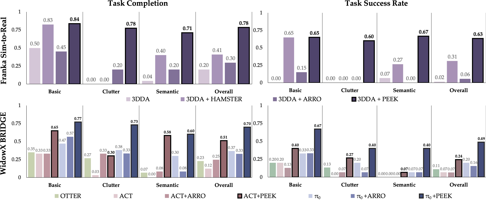

Task: Put the blue cube on the red cube
PEEK: Guiding and Minimal Image Representations for Zero-Shot Generalization of Robot Manipulation Policies
Summary

PEEK enhances the zero-shot generalization ability of any RGB-input manipulation policy by showing policies where to focus on and what to do. This guidance is given to the policy via a VLM that predicts paths and masking points to draw onto the policy's input images in closed-loop. This allows policies to focus on just how to execute low-level actions.
1. VLM Fine-tuning and Data Preparation
Overview:To help generalization of the policy, the VLM itself needs to be able to generalize well to new tasks. We fine-tune a pre-trained VLM on a large, automatically labeled robotics dataset to produce paths and masking points. Paths help the policy understand what to do, and masking points help the policy understand where to focus on.
Data Labeling Pipeline:The data labeling pipeline: (1) Detect task-relevant moving points, (2) mask irrelevant areas and extract gripper paths, (3) segment trajectories, and (4) generate gripper paths and masking points for each segment. This scalable labeling pipeline allows to label 20 robotics datasets from Open-X!
VLM Fine-tuning:We fine-tune a VILA-1.5-3b on the automatically labeled data to produce paths and masking points conditioned on robot image observations and task instructions.
2. Policy Training and Inference
At training time, we use the VLM to predict paths and masks every $H$ steps in closed loop. These paths and masks are drawn onto all images that the policy sees, $o_t^{p,m}$, where it predicts low-level environment actions. At inference time, the VLM is used in the same way, constantly predicting updated paths and masks in closed loop during policy execution. This process is compatible with any RGB-input policy!
Experiments and Results


Our Environments and initial PEEK VLM predictions.
(1): Franka Sim-to-Real: We train only in simulation and evaluate zero-shot in real with a 3D policy (3DDA).
(2): WidowX Bridge: We train on the BRIDGE dataset and evaluate zero-shot on our custom WidowX setup.

PEEK improves performance of 2D (ACT, $\pi_0$) and 3D imitation learning (3DDA) policies in generalization to new task variations.
We separate results into a variety of sections demonstrating various capabilities of PEEK below:
Extreme Clutter and Policy Reactivity
3DDA+PEEK, training data: Block Stacking in Simulation
Task: Put the blue cube on the red cube
8x speed, pauses come mainly from FoundationStereo depth queries.
Semantic Generalization
Standard $\pi_0$, training data: BRIDGE
Task: Give the banana to Jensen Huang (gets stuck)
Task: Put the green pepper in the green drawer (wrong drawer)
Task: Put the healthy food on the plate (grabs pizza instead of carrrot)
$\pi_0$+PEEK, training data: BRIDGE
Task: Give the banana to Jensen Huang
Task: Put the green pepper in the green drawer
Task: Put the healthy food on the plate
Videos play at dynamic iPhone timelapse speed
Visual Clutter
Vanilla ACT, training data: BRIDGE
Task: Push the button (doesn't know what to do)
Task: Put the carrot in the drawer (goes for drawer)
Task: Slide the pot to the shrimp (goes for shrimp)
ACT+PEEK, training data: BRIDGE
Task: Push the button
Task: Put the carrot in the drawer (partial success: missed drop)
Task: Slide the pot to the shrimp
Videos play at dynamic iPhone timelapse speed
Extreme Object Generalization
3DDA+PEEK, training data: Putting cans on pans in Simulation
Task: Put the flamingo on Kobe Bryant
Task: Close the drawer
Task: Put the Labubu toy on the oreo box
Task: Put the spiderman in the lunch box
Task: Put the Labubu toy in the shopping bag
Videos play at 8x speed
What Does the Policy See?
Task: Put the green pepper in the green drawer
Task: Put the blue block on the red block
Task: Put the healthy food on the plate
Task: Put the red block on the blue block
Ablation Study: Paths vs Masks?
Ablation of path and mask supervision on success rate in simulation.
| Paths p | Masks m | Success (%) |
|---|---|---|
| ✗ | ✗ | 33.5 ± 3.1 |
| ✓ | ✗ | 52.8 ± 2.9 |
| ✗ | ✓ | 65.6 ± 3.1 |
| ✓ | ✓ | 73.6 ± 3.9 |
PEEK benefits from both paths and masks, with the combination of the two achieving the highest success rate on just block stacking, without any generalization challenges, in simulation. We can see in the real-world results that masks become even more important in cluttered real-world scenes.
BibTeX
@inproceedings{zhang2025peek,
title={PEEK: Guiding and Minimal Image Representations for Zero-Shot Generalization of Robot Manipulation Policies},
author={Jesse Zhang and Marius Memmel and Kevin Kim and Dieter Fox and Jesse Thomason and Fabio Ramos and Erdem Bıyık and Abhishek Gupta and Anqi Li},
booktitle={arXiv:TODO FILL},
year={2025},
}